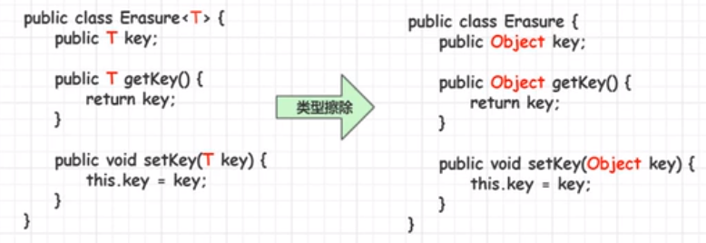
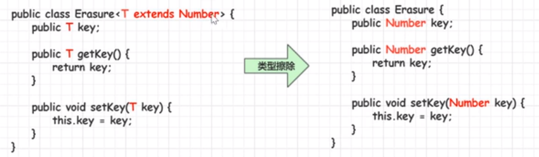
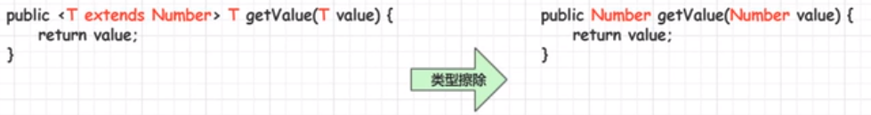
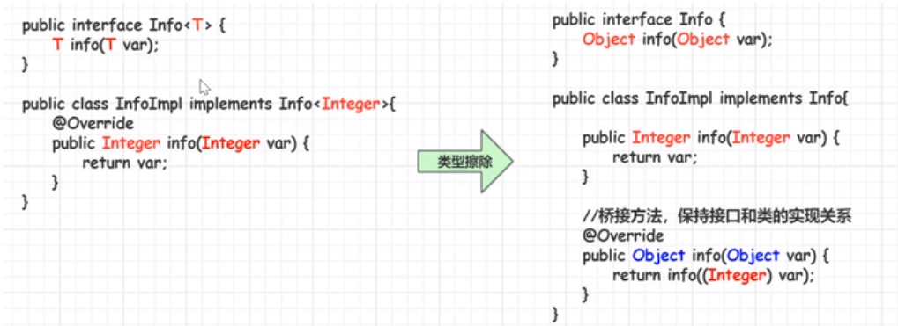

泛型
泛型
原因：程序员可以构建一个元素类型为Object的集合，该集合能够存储任意的数据类型对象，而在使用该集合的过程中，需要明确知道存储每个元素的数据类型，否则很容易在运行期间引发ClassCastException异常。
概念：Java泛型是JDK5中引入的一个新特性，泛型提供了编译时类型安全监测机制，该机制允许我们在编译时检测到非法的类型数据结构。
泛型的本质就是参数化类型，也就是所操作的数据类型被指定为一个参数。
优点：
- 类型安全：编译时类型安全监测机制
- 消除了强制类型的转换：避免从Object进行类型转换
1.泛型类
泛型类的定义语法
1
2
3
4public class MainClass<泛型标识, 泛型标识, ...> {
private 泛型标识 变量名;
...
}常用的泛型标识：T E K V
使用语法
1
类名<具体的数据类型> 对象名= new 类名<具体的数据类型>();
Java1.7以后，后面的<>中的具体的数据类型可以省略不写
泛型类在创建对象的时候，没有指定类型将按照Object类型来操作
泛型的类型参数只能是类类型，不能是基本数据类型
1.1从泛型类派生子类
子类是泛型类，子类和父类的泛型类型要一致
1
class ChildGeneric<T> extends Generic<T>
子类是泛型类，并进行泛型拓展
1
class ChildGeneric<T,K,E> extends Generic<T>
子类不是泛型类，父类要明确泛型的数据类型
- 使用时：
类名 对象名= new 类名();
1
class ChildGeneric extends Generic<String>
- 使用时：
子类不是泛型类，父类没有明确泛型的数据类型，则默认为Object
1
class ChildGeneric extends Generic
2.泛型接口
泛型接口的定义语法
1
2
3
4public interface Generic<泛型标识, 泛型标识, ...> {
public 泛型标识 变量名;
...
}
2.1泛型接口使用
实现类是泛型类，实现类和接口的泛型类型要一致
1
class ChildGeneric<T> implements Generic<T>
实现类是泛型类，并进行泛型拓展
1
class ChildGeneric<T,K,E> implements Generic<T>
实现类不是泛型类，接口要明确数据类型
1
class ChildGeneric implements Generic<String>
实现类不是泛型类，接口没有明确泛型的数据类型，则默认为Object
1
class ChildGeneric implements Generic
3.泛型方法
语法
1
2
3修饰符 <T, E, ...> 返回值类型 方法名(形参列表) {
方法体...
}public与返回值中间<T>非常重要，可以理解为声明此方法为泛型方法作用：泛型类要在实例化的时候就指明类型，如果想换一种类型，不得不重新new一次，可能不够灵活；而泛型方法可以在调用的时候指明类型，更加灵活
泛型类中的使用了泛型的成员方法并不是泛型方法，只有声明了
<T>的方法才是泛型方法- 泛型类中的使用了泛型的成员方法不能声明静态方法
- 泛型方法可以声明为静态方法
例如
1
2
3
4
5
6
7
8
9public class MyGenericMethod {
public <M> void show(M m) {
System.out.println(m.getClass());
}
public <M> M show2(M m) {
return m;
}
}使用格式：调用方法时，确定泛型的类型
1
2
3
4
5
6public static void main(String[] args) {
MyGenericMethod mm = new MyGenericMethod();
mm.show("aaa");
mm.show(123);
mm.show(12.45);
}泛型方法支持可变参数
1
2
3
4public <E> void print(E... e) {
for(E el : e){
System.out.println(e);
}<T>表明该方法将使用泛型类型T，此时才可以在方法中使用泛型类型T与泛型类的定义一样，此处T可以随便写为任意标识，常见的如T E K V等形式的参数常用于表示泛型
泛型方法与泛型类的
<T>可以相同，代表不同的类型总结
- 泛型方法能使方法独立于类而产生变化
- 如果static方法要使用泛型能力，就必须使其成为泛型方法
3.类型通配符
- 什么是类型通配符
?- 类型通配符一般是使用
?代替具体的类型实参 - 类型通配符是类型实参，而不是类型形参
- 类型通配符一般是使用
1 | public static void main(String[] args) { |
3.1类型通配符的上限
语法
1
类/接口 <? extends 实参类型>
要求泛型的类型，只能是实参类型或其子类类型
- 不能填充元素
1 | public static void main(String[] args) { |
- 应用：
TreeSet(Collection<? extends E>)
3.2类型通配符的下限
语法
1
类/接口 <? super 实参类型>
要求该泛型的类型，只能是实参类型或其的父类类型
应用：
TreeSet(Comparator<? super E>)
4.类型擦除
- 泛型是Java1.5版本才引进的概念，泛型代码能够很好地和之前版本的代码兼容
- 类型擦除：泛型信息存在于代码编译阶段，在进入JVM之前，与泛型相关的信息会被擦除掉
1 | ArrayList<Integer> ints = new ArrayList<Integer>(); |
4.1无限制类型擦除

1 | class A<T> |
1 | A<Integer> ints = new A<Integer>(); |
4.2有限制类型擦除

1 | class A<T extends Number> |
1 | A<Integer> ints = new A<Integer>(); |
4.3擦除方法中类型定义的参数

1 | class A<T extends Number> |
1 | A<Integer> ints = new A<Integer>(); |
4.4桥接方法

5.泛型数组的创建
可以声明带泛型的数组引用，但是不能直接创建带泛型的数组对象
1
2ArrayList<String>[] list = new ArrayList[5]; √
ArrayList<String>[] list = new ArrayList<String>[5]; ×1
2
3
4
5ArrayList<String>[] list = new ArrayList[5];
ArrayList<String> item = new ArrayList<String>();
item.add("str");
list[0] = item;
System.out.println(list[0].get(0));可以通过
java.lang.reflect.Array的new Instance (Class<T>, int)
创建T[]数组1
2
3
4
5
6
7
8
9
10
11
12
13
14
15
16
17
18
19
20
21
22
23
24
25
26
27
28
29
30
31
32
33
34
35
36
37
38package top.carpenter;
import java.lang.reflect.Array;
import java.lang.reflect.Field;
import java.lang.reflect.Method;
import java.util.ArrayList;
import java.util.List;
class A<T>
{
private T array[];
public A(Class<T> clz, int length) {
this.array = (T[]) Array.newInstance(clz, length);
}
public T get(int index)
{
return this.array[index];
}
public T[] getArray() {
return array;
}
public void put(int index, T item) {
this.array[index] = item;
}
}
class main {
public static void main(String[] args) {
A<String> a = new A<>(String.class, 3);
a.put(0,"first");
a.put(0,"sec");
a.put(0,"3rd");
System.out.println(a.get(0));
System.out.println(a.getArray());
}
}在开发中少用泛型数组，多用泛型集合
原文作者: 掘金木匠
原文链接: http://goldcarpenter.github.io/2019/02/02/泛型/
版权声明: 转载请注明出处(必须保留作者署名及链接)